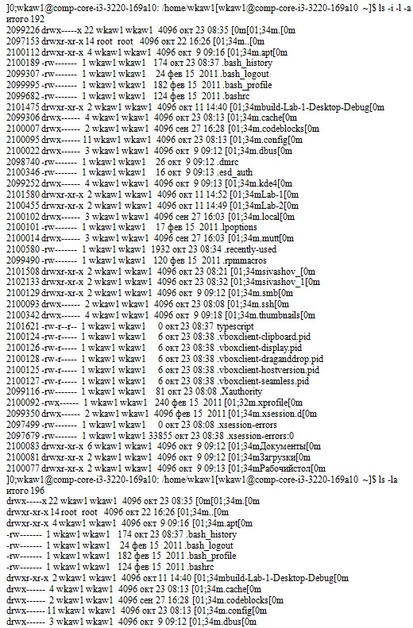
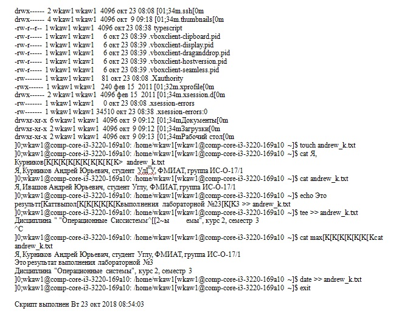
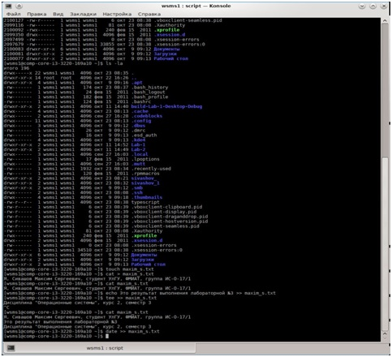

Задание 1.
1. В терминале вводим команду: $ script
2. Убеждаемся, что находимся в домашнем каталоге, с помощью данной команды $ pwd
3. Смотрим, какие файлы уже находятся в домашнем каталоге, с помощью команды:$ ls
4. Вводим команду:$ ls -i -l
В первой колонке этой команды указывается серийный номер файлов (номер inode).
5. Вводим команду: $ ls -i -l -a
Эта команда отображает скрытые каталоги и файлы.
6. Вводим команду:$ ls -la
7. Создаём файл с именем = andrew_k.txt командой $ touch
8. Вводим в этот файл следующую информацию «Я, Курников Андрей Юрьевич, студент УлГУ, ФМиИТ, группа ИС-О-17/1» командой:
$ cat >
<информация, указанная выше>
9. Проверяем, что информация в файл введена, командой: $ cat < andrew_k.txt >
10. Дополняем созданный файл следующей информацией «Это результат выполнения лабораторной №5» с помощью команды:
$ echo <информация> >> < andrew_k.txt>
11. Дополнить созданный файл следующей информацией «Дисциплина «Операционные системы», курс 2, семестр 3» с помощью команды:
$ tee >> < andrew_k.txt>
<информация, указанная выше>
12. Проверяем, что информация в файл введена правильно, командой: $ cat < andrew_k.txt >
13. В конце файла добавляем дату и время: $ date >> < andrew_k.txt >
14. Делаем скриншот окна терминала и называем его «laba03.jpg».
15. Завершаем задание вводом Ctrl-D.
Файл typescript


Скриншот терминала:

На главную